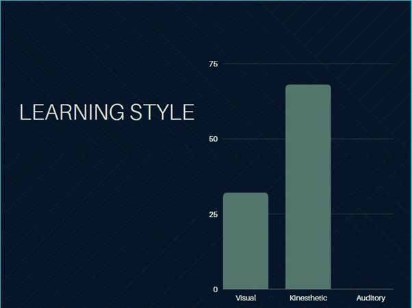
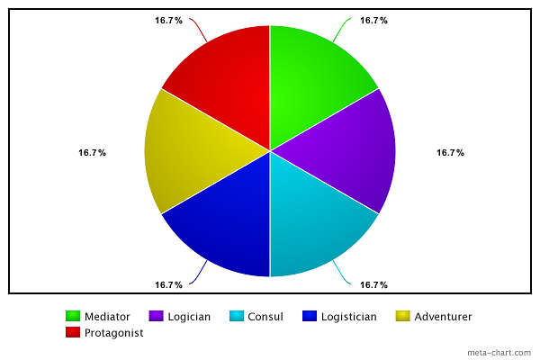

Mark was born in Sydney of Italian background, upon completion of his HSC in Griffith in 2015,
He is currently employed as a Health Information Officer at a private hospital in Melbourne.
Mark has always enjoyed IT. From playing computer games on his parents TV,
to selecting as many IT electives at High School.
Being from a fairly tech-savvy family also contributed to this interest.
Mark began a Diploma of IT after High School, and asked what was his main area of IT interest, he said:
“...network security and programming AI, especially for robots.”
Mark further added that these are the main areas he wishes to concentrate on during his studies.
“...careers in these fields are what I aspire to achieve.”
His hobbies include gaming, ball sports (particularly Rugby and Soccer), Music (Rock and Metal) and fixing cars.
Max, who lives in Cairns North Queensland, is a 25 year old student of RMIT.
He has previously studied a diploma at CQU and worked in the ADF.
His interest in IT started because of his father, who was an IT consultant working from home.
Hence Max was always surrounded by computers and servers.
Knowledge and interest in IT was accelerated during work in the ADF.
“… every second week there was something new;... radios, GPS, commanders tablets,
tracking and positioning gadgets, bore-sight tools were becoming more common place,
everything was starting to become more ‘digital.’”
After the Army, Max decided to study IT. He was drawn towards Information security and started some online courses,
such as Comtia Network and linux+ offered at sites such as Cybrary.it, EdX
and Udemy
With these courses Max started to become more interested in programming,
and started taking some courses in learning how to code using CodeAcademy.
“RMIT has a lot more programming on offer. In particular linux and C++ … [and these] were good selling points…
but I also hope to improve my GUI and graphical design...”
Zac is Australian who completed his VCE in 2018.
He then commenced an electrical apprenticeship.
This was not to his liking so now he is pursuing a career in IT.
Zac is very sports minded playing AFL, cricket and basketball.
Highlights include playing basketball in America against high schools, and playing AFL at the MCG and Marvel
stadium. He also enjoys video games with friends.
Zac’s interest in IT started in primary school when he received a DS console.
Since then he has kept up to date with the latest gaming technology.
His interest in IT today is very broad. Besides gaming, he likes learning about automation,
especially home networks. He also enjoys watching various “you-tubers” talk about technology.
But his biggest interest is centred on Tesla and Elon Musk.
The technology side of car automation and renewable energy.
One day Zac hopes to start his own business with the knowledge he gains from the RMIT IT course.
As Zac has said he specifically wishes to:
“...teach the fundamentals and basics that I have learnt to another person to make their life easier
with technology.”
Besides English, Lucky is fluent in Cebuano and Tagalog (both languages from the Philippines).
Ever since Lucky was young he’s had a passion for helping people in need.
This is exemplified by his choice of Nursing as a career, which he studied at RMIT.
He also has a liking for IT Technologies. These two can be married together.
As Lucky said:
“I have seen and used a variety of technology that assist humans[making]
manual task[s] easier”
His hobbies include playing computer games particularly: RPG, MMORPG, FPS games
Lewis was born in England and emigrated to Australia at age 11.
At High School he shone in science subjects especially Mathematics,
whilst outside the classroom he represented the school in soccer and chess.
Studying accountancy at night, in 1979 he became a member of what is now known as the
Institute of Public Accountants.
The following year he started an undergraduate Mathematics degree at Flinders University.
Whilst working as an accountant, Lewis was exposed to computer programming and from then on programming became somewhat of a passion.
This passion became the driver to enrol in the RMIT IT Degree.
Asked what it is about computer programming he likes, he stated:
“… personal satisfaction. It gives me immense joy when presented with a
programming problem and I ‘nut’ it out, and make things work.”
Other than family, his biggest love is his home town football club: Swindon Town Football Club (Nicknamed
‘The Robins’ because of their red shirts).
Lewis has been married for over 40 years and has one child.
More Information on Lewis
Peter Hodgkinson
Peter is an Australian Citizen, born and raised in Brisbane, Qld, in a family of ten children.
His grandparents came from Wales, England & Ireland. He completed Secondary School in Brisbane,
but has not as yet completed any tertiary studies.
Peter leaned to fly light aircraft many years ago and had dreams of becoming a Qantas 747 Pilot like his Brother,
however his life took a different path and he spent many years working in Sales/Account Management & Marketing
for various industries, including Hospitality, Building & Construction and Information Technology.
Peter has been interested in IT ever since he was young boy, watching cartoons, such as “The Jetsons” and
“Dick Tracy”, which forecast technology (ie Dick Tracy’s watch – video calls).
Peter was involved in the Marketing of Cable TV, Chromecast and encryption Services etc.
But in 2019 he decided to become more involved in the technical aspects of the products.
This lead to study of IT at RMIT. He also believes these studies:
“...will be able to further enhance my skills in Time Management, Problem Solving,
Teamwork and Conflict Resolution.”
Peter’s main hobbies are keeping fit and Singing in a band, which he enjoy immensely.
The tests conducted by the members of the group differed slightly however their strengths and weaknesses where always clearly identified.

According to the various learning tests conducted by members of the group, 32% fell under the “visual learner” classification, while the remaining 68% where “tactile learners” (
also known as "Kinesthetic").
This proved to be highly beneficial to the group as large parts of the project required things to be tested and experimented with.
Additionally, most of the teamwork was conducted and coordinated through messaging and through Microsoft teams.
The results of the Briggs Myers – 16 personalities tests where useful to the success of our team with no two members sharing the same exact personality type
and most where in different categories of personalities, allowing for a full range of input from across the spectrum to be considered. The majority of personalities
had an overall positive number of beneficial traits to the group ranging from leadership skills, entrepreneurial, creativity and mediation.
This caused members to kind of ‘fall” into their own positions within the group, members were encouraged to work on tasks they
had knowledge about or that suited their strengths, allowing for members to work unsupervised and to their full potential.

Our weaknesses did not seem to have any immediate or noticeable effect upon the assignment as a whole.
Overall the project allowed us to see how valuable it is having different personalities working together in a team,
it showed us that having different personalities can positively impact performance and can create a balance that can assist in increasing the efficiency and quality
of work.
Team's Ideal Jobs
Job Titles
Team Member
Job Title
Lewis Dean
SQL Analyst Programmer
Mark Parisotto
Penetration Tester (System Assurance)
Peter Hodgkinson
Application developer
Lucky Rubenecia
Software Developer
Zac Foulds
Self Employed IT Field Technician
Max Trounce
Software Engineer / Developer Programmer
Job Characteristics (requirements)
Skill
LD
MP
PH
LR
ZF
MT
Communication
Yes
Yes
Yes
Yes
Yes
Yes
Documentation Writing
Yes
Yes
Teamwork
Yes
Yes
Yes
Yes
Yes
Yes
Work independently
Yes
Yes
Software Design (Programming Skills)
Yes
Yes
Yes
Yes
Systems Testing
Yes
Yes
Data Manipulation
Yes
Yes
Experienced
Yes
Yes
Australian Citizen
Yes
Education
U-IT
U-IT
U-IT
U-IT
U-IT
Mast
Criminal History Check
Yes
U-IT = Undergraduate degree in IT
Mast = Master Degree in IT
Career Paths
No career paths have changed as a reult of Assignment 1 feedback.
Team Member
Career Path
Lewis Dean
Immediate goal is to complete the undergraduate degree.
Lewis considers this sufficient to be able to apply for his ideal job.
Mark Parisotto
Marks career path involves firstly completing the IT degree with emphasis on Networks,
then gaining the necessary qualifications (CREST and OSCP) to be able to apply for his ideal job.
Peter Hodgkinson
Initially Peter wishes to complete his undergraduate degree.
Concurrently with this he wishes to develop a mobile app for his wife’s catering company spudsisters.com.au.
gaining an understanding of the creation, development and life cycle of these applications.
He aims to identify a niche, through his volunteer work, through Alfred Health,
in Melbourne.
He has always had an interest in the community services sector and
through his volunteer work, he will endeavour to identify ways in which
Mobile Applications can be developed to assist doctors with managing their
patients needs.
Lucky Rubenecia
Lucky has completed has already completed a Diploma in Nursing at RMIT.
After completing the IT degree at RMIT he intends to continue to understand
Software Development and the fundamentals of Information Technology.
Zac Foulds
Loving technology Zac has developed a knowledge in different ranges of
IT including Mac, IOS, windows and data
He completed a year of as an electrical apprenticeship so has a lot of
knowledge regarding installing data points and racks, essential for home support.
He plans to complete his IT degree and continue his own research into home
electronics, and do small jobs for friends.
Max Trounce
Max will need to finish his bachelors here at RMIT.
Upon completion he wants to do Honours in software engineering likely at a
different University as he is unsure if RMIT has this option,
although he is aware that QUT does.
After Honours he would then either attempt to enter the workforce as a
junior software engineer in order to gain some hands on and real-life
experience that he needs to acquire before applying for the ideal job,
or he may commence a master’s the year after. Considering the job,
an Honours and Masters Degree in either software development,
cyber security, or artificial intelligence would likely be his best course of action.
This pathway so far is likely to take at least 6 years of uninterrupted
full-time study provided that all units are passed and completed on time.
Conclusion
All the ideal jobs insist on a number of core skills. The most prominant of these being
Communication skills and the ability to work in teams.
56% of jobs requires good communication and interpersonal skills while 33% require
‘excellent communication skills’ [Source]
After this the jobs tend to specialise. Most require programming skills, one predominantly requires
system testing abilities and the other centres around in-home customer support.
Education requirements: An undergraduate degree is a minimum for all positions. However
one position requires a Masters Degree.
Career Paths: All team members wish to complete their undergraduate degree. After this all members plan
different strategies. These range from no further studies to completing and Honours and Masters degrees.
It Tech
Blockchains and Cryptocurrencies
What are they, and what do they do?
A blockchain is a digital record of transactions, where the name comes from individual records
called blocks and they are linked together in a singular list called a chain.There are currently 861
blockchains in the world and there are four different types of blockchains. The four types of
blockchains are public, private, hybrid and federated. Cryptocurrency is a form of payment that
can be exchanged between parties for good and services. As of January 2021 there are over 400
cryptocurrencies in the world. Major cryptocurrencies are BitCoin, Ethereum, Cardano and XRP.
BitCoin has a current market cap of 1.1 trillion dollars and Ethereum current market cap is 245
billion dollars. To put Bitcoins market cap into perspective, Bitcoin has a bigger market cap than
Facebook, Tesla, Samsung and Berkshire Hathaway.
Bitcoins current market cap is the 8th
biggest in the world right now with gold being in 1st position. Blockchains were first used by
digital researchers in 1991, but it wasn’t really used until the Bitcoin owner in 2009 starting using
blockchains. Blockchains store data in blocks which are then chained to another block. Once one
block is filled with enough data another block is created and chained to the other block. For
Bitcoin’s blockchain it is decentralised so no person or group of people have control instead
everyone has control. A decentralised blockchain simply means that the data can’t be changed,
so for example for Bitcoin every transaction that takes play is public for everyone viewing. As of
currently for cryptocurrency and blockchains they are in its peak, since the launch of Bitcoin in
2009 every year the cryptocurrency market has gained traction and is only becoming more
adaptive and prevalent in the society that will live in. As the world and Australia tries to move into
a cashless society the move for digital currency becomes increasingly more enticing for people.
All your cryptocurrencies can be held in the form of a digital wallet where they are all kept.
Research show within the next few years cryptocurrencies will be a form of digital currency that
will start to be accepted as a form of payment. Whether you are going to the shops with your
credit card, a twenty dollar note or four hundred Dogecoin the choice could be yours with how
you want to pay for your purchase. However the future of blockchains could drastically change
how banks and payments work. Banks could save alot of money switching to blockchains.
Another reason for a this move could be settlement of your money could change from a few days
to only a few minutes. If society chooses to go into a blockchain path there will be the chance that
people who work within the bank industry lose their jobs. The development of Bitcoin in 2009 by
its owner Satoshi Nakamoto changed the view on blockchains and enhanced its perception to the
public. The emergence of Bitcoin becoming such prevalent object within our global economy with
ist enormous market cap and price, creating a movement towards a decentralised society. A real
world example of a blockchain is Spotify, the music streaming service which in 2017 change to a
decentralised data base to help with the artist licensing agreements of their music. Using a
blockchain for Spotify was able to create a public record of the rights of who had ownership.
What is the likely impact?
The potential impact for cryptocurrencies and blockchains is they become a mainstream currency
that we can use to purchase goods and services. Currently there is only a very small amount of
business and companies that except some certain cryptocurrencies as payment but expect this
number to drastically rise over the next few years. Positive impacts for cryptocurrency is that it is
in the form of a digital wallet so its cashless and is a lot more safe. It has incredibly fast
transaction times and very low fees swell which is great for investors. What’s likely to change
about blockchains and cryptocurrency is how the world accepts these as a currency of the future.
More and more cryptocurrencies and blockchains are going to be present as time goes on and
how we choose to accept them will determine how the crypto coin or blockchain future will last.
Cryptocurrencies will affect people who chose to invest in the currency at some point in time
whether it’s made them profit or a loss. As the currency changes its value every second there is
no set price over time, and so its a person or companies risk at which they choose to purchase
the cryptocurrencies and blockchains price at. A company could ask for a certain amount of
Bitcoin to purchase a product but overtime the price of bitcoin sky rockets so the company does
really well off the trade or it could go the other way and it could plummet and the company makes
a massive loss in the trade. Blockchains and cryptocurrency will continue to make jobs for the self
employed who choose to day trade and will not make any jobs redundant in the short term future
for anyone.
How will this affect you?
In our daily life, cryptocurrencies could be the future, investing and using the currencies for
purchasing goods. As every day passes cryptocurrencies and blockchains are becoming more
known and recognised. People are beginning to become more familiar with the coins intentions
and what they are used for. This will affect people in everyday life as now companies are
accepting various cryptocurrencies as payments to purchase goods that they sell. For example
you can now buy a Tesla with Bitcoin rather then just sole $AUD. Using cryptocurrencies to pay
for goods can have its benefits as you can buy the goods anonymously. However for the older
generations that don’t quite understand what’s going on and what’s the point, they still use cash
and may or may not use tap and go. Cryptocurrency will be used in the future starting with the
younger generations. Unlike stocks, when purchasing cryptocurrencies you don’t have to
purchase a whole entire crypto coin. Currently Bitcoin in Australia is $82k which for most is too
expensive to buy a full Bitcoin, so any amount that you chose to buy of the Bitcoin will be
converted from AUD to Bitcoin which is appealing as you can own 1/8 of a Bitcoin if you like.
Family will have to learn about cryptocurrencies form the younger generations as this is the
generation that will be growing up with the crypto. It may affect some family and friends who
choose to get into the market and purchase some cryptocurrency and others it may have no
affect on as they wish not to put money into the market and steer clear. Just like stocks
cryptocurrency has the chance to make money and to loss your money very quick and research is
key, it’s worth getting in early and doing your own research for long term propositions.
Cyber security
What does is it, what does it do?
Cyber security is the method or practice of defending: networks, computers, servers, mobile devices,
other forms of technology and data from malicious attackers. Cyber security is often referred to as “Information Security”
or “Information technology security” however they do slightly differ from one another.
Generally speaking, cyber security encompasses multiple different terminologies, technologies and defensive countermeasures that
together form the umbrella term of “cyber security.” Some of these technologies and methods are outlined below:
Network security: Network security encompasses the methods and technologies (such as Network intrusion prevention and detection systems,
firewalls and network authenticity methods) to secure networks from unwanted or unpermitted parties from accessing the network.
Application Security: Application security is the process and ability of ensuring applications and software remain safe for users
and remain threat free. Application security should be considered during the design of the application in question, issues, potential
vulnerabilities and threats should be identified and addressed accordingly, application security also ensures the integrity of data and
user / private information handled and stored by the application.
Information security: Information Security is a broader category of security than cyber; however, they are closely related.
Information security relates to the protection of information in physical and digital form, the two relate in the digital realm where information
may be passed through networking, applications, or other online services. (for example your credit card information when purchasing something online).
Cyber security is an ever-evolving group of technologies, with the origins of the field being sceptical and debatable
however cyber security did start to become an emerging technology in the late 70’s and early 80’s with the first viruses (worms)
being created and released around this time.
The field came into prominence during the late 80’s and early 90’s as an early and relatively undefended Internet started to become more popular
as the number of people connecting increased, malicious actors who would become to be known as “cyber criminals” realised that they could earn money by stealing data,
and other forms of personal data often extorting the victim in-exchange for the release of their information.
During this period there was an explosion of companies offering security services to customers,
Nod32, Norton, and Mcafee
where among the first and most popular.
Over time billions of dollars and countless hours of research,
development and collaboration where spent to advance technologies, construct counter measures and enforce unity amongst Internet protocols
to ensure that the end user and the various forms of data utilised today are kept safe.
The development of Quantum and super computers poses several challenges to cyber security in particular to cryptology,
advanced computers are capable of breaking the most secure of cryptographic algorithms. This would render the current cryptographic standards obsolete
and would grant malicious actors the ability to gain access to any information encrypted anywhere in the world within seconds, p
rovided they knew what they where looking for. As a result of this threat NIST ( the National Institute of Standards and Technology)
from the USA is currently working on a “post -quantum cryptographic solution” their goal is to create standards of encryption to replace the current standards
that will be eventually rendered obsolete they hope to have a draft submitted with the first algorithm/s some time between 2022-2024.
While this is good progress in attempting to prevent obsolescence and the inevitable catastrophe that would occur should significant advances in
Quantum or supercomputing within a few years, Implementing the necessary changes required to safeguard users,
and data In various forms could take up to 25 years (source)
to be fully implemented.
What is likely the impact?
The global Impact of cybercrime is massive, in the united states there is an attempted attack roughly every 40 seconds,
or over 2200 a day with the average cost of a data breach totalling around 3.9Million USD. To put this into perspective,
a famous attack on Equifax (a multinational credit bureau) in 2017 has costed the company $4 Billion USD,
the company is still paying off the loans it had to get to pay for damages.
Cyber crime is undoubtedly a serious problem within today’s society,
with the cost of cyber crime increasing year after year and the types of attack becoming increasingly sophisticated cyber security experts and professionals
are becoming a hot commodity for corporations and governments alike in a desperate attempt to thwart the onslaught of attacks.
Despite governments and corporations spending Billions of dollars every year trying to stop cybercrime,
the number of attacks every year and may increase for decades to come,
only 53% of the worlds population have access to the internet leaving another roughly 3.2Billion people disconnected, most living in very poor countries.
As the worlds poorest citizens start to gain the ability to connect to the internet some will seize the opportunity and overlook the
repercussions to commit crimes online from the relative safety of their homes for what is often perceived as easy money.
The problem of cybercrime is multifaceted and there is no single solution to prevent an attack,
a disgruntled employee may leak Intellectual property, user data or integral company Information out of spite,
a frustrated customer may seek vengeance after they feel that they have been unjustly treated or a government employee may leak sensitive documents for moral reasons.
Whatever the reason for the attack the number of attacks and the frequency that they occur is likely to continue to increase for some time.
How will this affect you?
Cyber security and the threat of cybercrime is becoming a part of everyday life, its significance and importance of comprehension have been realised.
It is likely that a higher understanding of cyber crime and how to avoid becoming a victim will be emphasised and taught to a higher degree in the generations to come,
educating the next generations of how to avoid becoming a victim of cybercrime will still be as relevant as it is today as the sophistication and complexity of attacks
increases. There is no “one size fits all” solution to any security problem, cyber security is no different and constant and continuous education to end users and
developments to security protocols and technologies will continue and will likely increase in intensity.
It is important in this day and age to be at least somewhat aware of what cyberattacks are occurring and when they are occurring often compromised
personal information is sold however the effects can be mitigated by staying aware and changing passwords and information if you or a corporation
that holds your data has been compromised. It is also becoming more important to understand how certain criminals can circumvent security safeguards
and protocols in order to gain your information or trust this tactic is known as “social engineering” and is the root cause of a large percentage of
attacks and data breaches. Overall cyber security is becoming more of an issue for ordinary people the need to educate the next generations and poorer
nations with a minority of citizens connected to the internet will be challenge over the coming decades.
Autonomous Vehicles
What does is it, what does it do?
Autonomous vehicles that can sense its surrounding environment and operate without any human
interaction, therefor the is no need for human control and the vehicle does all the work and takes
you to your destination. There are five levels of vehicle automation: No automation, driver
assistance, partial automation, conditional automation, high automation and full automation.
There are currently no full automation cars available to purchase at the moment but testing is
currently undergoing. Research and investment into the future of autonomous vehicles occur
every day even though we are still a few years away companies continue to pour money into
prototypes and research as they believe this will be the hit. Companies such as Uber are heavily
relying on autonomous vehicles to come and be prevalent as they want to cut cost with needing
no driver and there for a car can just come to your house and pick you up and take you to your
destination.
Therefore a car can just come to your house and pick you up and take you to your
destination. Currently plenty of companies are doing the research necessary to be able to
construct autonomous vehicles, companies such as Waymo, GM Cruise, Argo and Tesla are all
leading the way in this field. Currently we are in Level 3 and 4 for autonomous vehicles which
means for Level 3 that the human driver must respond to requests from the automated driving
system. Level 4 is the same as level three but there is less need for human control or intervention
when the operating system is in automated mode. Predictions says Level 5 vehicles will be
released late 2021 and 2022, and this is when the automated system is in control at all times and
in all types of road environments. Although this will not be vastly available this type of car will
become available to a select range of people who can afford to spend the money to purchase the
car. Within the next three years autonomous vehicles are set to hit the roads in selected parts of
the world. The vehicles will most likely be able to be fully autonomous on highway rather than in
densely populated areas. Companies such as Ford, GM, Honda, Toyota and Tesla, have all plans
by the end of 2021 to be fully autonomous on highways. Within the next three years autonomous
driving in suburban areas does not look like a thing that will exist just yet. It appears to be still a
few years away looks are later in the 2020s.
According to studies fully autonomous vehicles that
are expected to drive everywhere are expected between 2025-2030. There are plenty of technical
advances that make autonomous vehicles possible such as artificial intelligence, sensor systems,
security and network infrastructure. The emergence of AI over the past few years has helped the
autonomous car industry to boom. Within your autonomous vehicles is responds to deep learning
which reads to neurone activity of the car which then responds to voice, speech, image and
motion detection. Within an autonomous car and also on the outside it is packed with cameras
and sensors which helped the cars to be safe on our roads. A major problem that could be faced
with autonomous vehicles is hacking and hijacking of the car, as it's all technology, hackers are
able to get into the system. Tesla held an event with they asked two people to try to hack into
their Tesla Model 3, within minutes the men were able to get within the system and take over.
Tesla then resolved the issue and patched it up, but all thanks to the learning curve the men gave
by getting into their system.
What is the likely impact?
The potential impact for autonomous vehicles is huge for the world and how we travel. An
immediate impact is that fully autonomous cars are safer on our roads as they take away human
error which equates to roughly 94% of crashes on our roads. This will make our roads and
travelling alot more safer. Deaths on our roads will be lowered but as more people will go to fully
autonomous vehicles as they become more available. Fully autonomous cars require zero human
control when the car drives you to your destination.
Major impact for car dealers and brands that
don’t supply or offer this product will how to adjust and look to offer as this is the way off the
future as all signs point to autonomous cars and electric cars such as Tesla look to take over.
Some facts about what fully autonomous vehicles will do in Australia are, they will improve
transport interconnectivity, reduce transport energy consumption by up to 90%, greater mobility
for the elderly and disabled. This will hugely affect the elderly and the disabled as now they are
able to get transport by themselves. Allowing them to hop into the car and arrive at their
destination without a career being their to help the disabled or for the elderly who may have
impaired vision. this will continue for them to do every day routines without the inconvenience of
not having a vehicle for themselves to transport on their own. Each and every person will be
affected by autonomous vehicles but not in the same way, companies like Uber are banking on
autonomous vehicles and as a result Uber drivers and other ride share drivers will become
redundant as they won’t be needed to drive the car.
How will this affect you?
In our daily life, autonomous vehicles can change the way we get to and from work or other
various locations we desire to go. Autonomous vehicles are still around 5 - 10 years away from
being properly regulated onto our roads. In the short term there will be no change to our lives
except for the growing anticipation of what’s to come for the car industry. Tesla are around 1 year
away from introducing the level 5 version of full automation. This extra can be purchased for your
Tesla at the cost of $10,000 USD. As there are not many companies that are currently producing
fully autonomous cars the price for these cars are expensive. Due to the high price majority of
people will not be able to afford having such a car.
Our lives won’t drastically change for around
another 5-10 years where the impact of fully autonomous vehicles we have a much heavier
presence on our roads. This will allow us to feel much safer while driving and the stress and
anxiety of driving a car for some people will be lowered. As the cars are not around yet they
haven’t made any changes to road rules, for instance the car driver can’t use their phone when
they are driving the car, so will the rule still be the same when the car drives itself and you the so
called driver sits there and waits for the arrival at your destination. If this rule is allowed it will
change the way we transport, We will be able to eat breakfast in the car, or reply to work emails,
and all of this can be done outside of the car but doing this while your car drives you to work
saves time. Everyone will be effected by autonomous vehicles including family and friends, from
personal experience parents stress about when their new daughter or son get their license and go
and drive a car. They might have an accident or be stupid and try things they shouldn’t on the
road. The autonomous vehicles will take the stress away as the car drives itself and leaving the
parents less stressed.
Machine learning
Machine learning is a form of Artificial Intelligence that can learn to make accurate predictions and improve its accuracy in an autonomous fashion, by being analyzing data and in some cases through real-world interactions.
At its core machine learning is about analyzing data and making predictions based off the information fed to the underlying algorithm this data is parsed and an outcome is produced.
There are a number of different algorithms a machine learning application can utilize. The algorithm is generally selected depending on the purpose or desired function of the application. Some of them are outlined below:
Supervised: Supervised learning is the name given to the algorithm utilized when the application or machine learning itself is undertaken in a controlled and supervised environment,
the operator or user provides the machine with a dataset, inputs or outputs and is aware of what the result should be.
The machine analyzes the data and inputs and attempts to identify patterns to learn and observes, after this the machine makes a prediction or a determination,
this is then corrected by the user or operator until the machine achieves a higher level of performance.
Semi- supervised: Semi supervised learning is similar to Supervised learning however the machine is fed both labelled and unlabeled data,
basically labeled data is data that already has a pre-determined meaning or function and unlabeled data does not, by analyzing the data the machine learns to label unlabeled data.
This type of machine learning is very common and is commonly used on websites that require a the user to “Enter a captcha” or to click on the pictures matching a word.
Unsupervised: Unsupervised learning is when there is no operator or user to provide instruction or correction,
the machine analyzes data to identify patterns, the machine learns to determine the correlations and relationships.
This is commonly used for a machine to analyze or interpret large datasets and to sort, label or address that data in accordance with its function,
the results can vary the machine may group the data, or it may simply re-arrange the data.
As previously stated, there are many different approaches that can be taken in order to get machines to learn, from basic decision trees to layering artificial neural networks,
the way in which the machine is taught is heavily dependent upon what exactly the desired end result is, from advanced medical devices,
to autonomous vehicles Machine learning has started to become more mainstream with many companies starting to implement or research their own variant to
increase performance and gain a competitive edge.
A common misconception shared by many about machine learning is that machine learning is all about automation and making everything autonomous.
While automation is becoming increasingly more popular machine learning is also often utilized to simply identify patterns,
especially when there is an incredibly large amount of data to be analyzed and the best way to analyze the data is unknown,
a machine learning application can analyze this data in a fraction of the time a human can and can produce some tangible result.
While for many people the future seems to hold a world of total automation, there are still many complex problems that need to be solved,
for instance it is not uncommon for the machine to learn seemingly random things when analyzing new data.
Another problem is that when a learning algorithm is not working or functioning properly the easiest solution seems to be to feed the machine more data,
however time and available data can quickly become a serious problem.
What is likely the impact?
The likely impact of machine learning seems hard to gauge, it is not uncommon to hear about a company developing some new revolutionary robot, or a self-driving car,
that will hit the markets within the next few years or so. However, as the years go by these stories appear to fade and on the surface,
it seems as if it was all a fantasy and have been long forgotten about.
However, the issue of projects failing and falling out of the public view is multifaceted and does not necessarily mean that the underlying machine learning aspect of the idea was the reason for the failure.
Machine learning is becoming more mainstream there are many corporations that are attempting to implement some variant for numerous reasons,
it is so far fetched to imagine that not so far in the future Machine learning will have a more central role within society.
The presence of machine learning is likely to increase in both visibility and behind the scenes,
the development of more advanced and super computers will only exacerbate the rate of which machine learning becomes more feasible and the speed of which learning can be achieved.
What does this mean for you?
As technologies advance, they inevitable make their way into and solidify themselves within the lives of ordinary people.
Machine learning has the capacity to assist in the advancement of other technologies such as autonomous vehicles,
security and healthcare which can lead to a higher standard of living for the average person.
Machine learnings unique ability to learn makes it both a powerful tool to refine existing systems and technologies and to assist in the creation of new ones, overall,
the impact that machine learning will have is likely to be highly positive machine learning can also be used to make certain dangerous jobs safer or automated,
such as bomb disposal, deep sea diving and traffic controlling.
The impacts of which machine learning will have upon the job market is uncertain and is heavily debated however if machine learning can assist in providing in a higher standard
of living for all a blow to the job market may be a fair trade off.
This is likely to not be realized for at least a number of decades and is heavily dependent upon a number of other factors.
Industry Data
What are the Job Titles for your group's ideal jobs?
Peter Hodgkinson - Mobile Application Developer
Job Description
Mobile app developer's primary duty is to create, maintain, and implement the
source code to develop mobile app and mobileplatform programs that meet the needs
and requirements of the clients using the computer programming languages.
Skills Required:
Mobile Application Developers require analytical skills, as it is important
for developers to be able to identify and understand user needs. Developers need to be
able to communicate both verbally and in writing. They need to be creative and problem
solve as well as have an understand of various programming languages. Time management
and organizational skills are also very important.
IT Specific Skills Required
JAVA, Kotlin, Swift, Rust & HTML
Lucky Rubenecia - Software Developer
Job Description
Researching, designing, implementing, and managing software programs. Testing and evaluating
new programs. Identifying areas for modification in existing programs and subsequently
developing these modifications. Writing and implementing efficient code.
Skills Required:
A Software Developer needs to have a Mathematical ability, be able to problem solve, have
an understanding of programming languages, excellent organization and time management skills.
You will require an understanding of programming languages, focus on accuracy as well as an
attention to detail. You will need to be on top of the latest trends and keep up to date with
changes in technology. As this role involves collaboration, teamwork skills are very important.
IT Specific Skills Required
Python, JavaScript, Scala, Java & C++
Zac Foulds - Self Employed IT Field Technician
Job Description
Information Technology (IT) Technicians are computer experts who provide IT support to users.
They install and configure new software and hardware, respond to support requests and ensure
the optimal performance of computers through ongoing maintenance. Technicians also identify
software and hardware issues at workplaces to resolve them and they are the primary contact people
for logging and resolving issues.
Skills Required:
This role requires, excellent diagnostic and problem solving kills, be able to communicate
both verbally and in writing. You will require good organization and time management skills,
have an in depth knowledge of various computer systems and networks. Skills that are also required
for the role, are a sound knowledge of internet security and data privacy principles.
IT Specific Skills Required
Java, SQL, Javascript, C++ & Python
Lewis Dean - System Analyst and Computer programmer
Job Description
The requirements of this role are to maintain new software applications and support the
requirements of a business or organization. This involves includes writing, coding, testing,
and analyzing software programs and applications. The Programmer Analyst will also research,
design, document, and modify software specifications throughout the production life cycle.
Skills Required:
Critical and Analytical thinking is crucial for this role as well as effective problem solving
skills. A high level of both verbal and written communication skills is imperative as well as
Good Project Management skills and an ability to work under pressure and to tight deadlines
IT Specific Skills Required
Java, Python, C++, and Scala
Mark Parisotto - Penetration Tester – Cyber Security
Job Description
Penetration testers help businesses and organizations identify and resolve security vulnerabilities
and weaknesses affecting their respective computer systems and networks as well as identify security
gaps in the overall IT infrastructure. Penetration testers play an important part in the design and
implementation of an effective cybersecurity strategy, which is key for many large corporations and
Government Agencies across the world.
Skills Required:
This role requires, knowledge of various operation systems, an understanding of Networking &
Protocols, as well as a grasp and understanding of Information security and Security Testing Tools.
A willingness to learn, an understanding of Secure Web communications as well as be able to script
or write code. An understanding of both Microsoft Domain Architecture and network engineering is
valuable in this type of role. Certifications from Microsoft and Cisco would be a distinct advantage.
IT Specific Skills Required
Bash, Python, Perl, PHP, Ruby and languages commonly used in web development (HTML, CSS, JavaScript, SQL, and ASP.NET). These are not necessarily a requirement, but recommended.
Developers and Software Engineers are also classed as programmers. Their job responsibilities
include writing code, however they also contribute to many other aspects of the project/software
development process. Along with coding, a developers’ role involves the development of information
systems, by designing, developing and installing software solutions. The role involves analysis,
problem solving, solution development and project solutions.
Skills Required:
This role requires people with a high Mathematical ability, problem solving skills, a strong
understanding of the different types of programming languages as well as attention to detail.
As with many roles, good organization skills as well as time management skills are also required.
IT Specific Skills Required
Java, Python, C++, and Scala.
How do each of these rank in terms of demand from employers?
Demand (Labour Insight Jobs)
According to the “Labour Insight Jobs (Burning Glass Technologies)” data
from Mar. 24, 2017 - Mar. 23, 2018, rankings are as follows on a list of 25 Top IT Job Titles:
Ranked Highest to Lowest:
Rank
Team Member
Job Description
(2)
Mark Parisotto
Penetration Tester
(4)
Maxwell Trounce
Software Engineer / Developer Programmer
(10)
Zac Foulds
Self Employed IT Field Technician
(10)
Lewis Dean
System Analyst and Computer programmer
(10)
Mark Parisotto
Cyber Security
(19)
Lucky Rubenecia
Software Developer
(23)
Peter Hodgkinson
Mobile Application Developer
According to the “Labour Insight Jobs (Burning Glass Technologies)” data
from Mar. 24, 2017 - Mar. 23, 2018, rankings are as follows on a list of 25 Top IT Job Titles:
Ranked Highest to Lowest:
Rank
Team Member
Job Description
(1)
Mark Parisotto
Cyber Security
(2)
Mark Parisotto
Penetration Tester
(4)
Maxwell Trounce
Software Engineer / Developer Programmer
(4)
Lewis Dean
System Analyst and Computer programmer
(5)
Zac Foulds
Self Employed IT Field Technician
(6)
Peter Hodgkinson
Mobile Application Developer
(8)
Lucky Rubenecia
Software Developer
This article identifies, that there is a growing demand for “data, information, systems,
network and cloud security professionals to assist businesses, corporations and governments
with securing their information, due to the substantial increase in the number of cyber-attacks
that are taking place across the world.
How do the IT-specific skills in your required skill set rank in terms of demand from employers?
According to the Burning Glass Data, “Skills in Greatest Demand (Specialised Skills), Dec. 24,
2017 - Mar. 23, 2018”, Java / Java Script specialized skills are ranked 2nd & 3rd in the table,
which is identified in all of the IT Specific skills, for each of the Ideal Job Descriptions
from our Team.
In comparison, I would refer to other data from IDG Communications, “Top 10 technical skills
that will get you hired in 2020, Sharon Florentine (CIO (US)) 09 December, 2019”, shows that
the skills in demand for the following programming languages, for example, have increased
significantly over a five year period from 2014 – 2019, especially for the Python, the high
level, easy to read programming language.
Language
2014 Share
2019 Share
% Change
Java
19.7%
20.8%
+6%
Python
8.1%
18.0%
+123%
Java Script
12.4%
14.5%
+17%
What are the three highest ranked IT-specific skills which are not in your required skill set?
As per the “Labour Insight Jobs (Burning Glass Technologies)” data from Mar. 24, 2017 - Mar. 23, 2018,
Greatest in demand (Specialised skills), 3 highest rankings, which are not on the required skill set are
as follows:
Team Member
Job
Skills
Mark Parisotto
Penetration Tester
Project Management, SAP & Business Management
Maxwell Trounce
Software Engineer / Developer Programmer
SQL, Javascript & Microsoft Windows
Lewis Dean
System Analyst and Computer Programmer
SQL, Javascript & Microsoft Windows
Zac Foulds
Self Employed IT Field Technician
Microsoft Windows, Project management & SAP
Peter Hodgkinson
Mobile Application Developer
SQL, Javascript & Microsoft Windows
Lucky Rubenecia
Software Developer
SQL, Microsoft Windows & Project Management
What are the three highest ranked general skills which are not in your required skill set?
Team Member
Job
Skills
Mark Parisotto
Penetration Tester
Creativity, Leadership & Mentoring
Maxwell Trounce
Software Engineer / Developer Programmer
Leadership, Mentoring & Team Building
Lewis Dean
System Analyst and Computer Programmer
Teamwork / Collaboration, Leadership & Mentoring
Zac Foulds
Self Employed IT Field Technician
Writing, Teamwork / Collaboration & Creativity
Peter Hodgkinson
Mobile Application Developer
Troubleshooting, Mentoring & Team Building
Lucky Rubenecia
Software Developer
Leadership, Team Building & Management
Having looked at the Burning Glass data, has your opinion of your ideal job changed? Why or Why Not?
Team Member
Changed?
Career Paths
Mark Parisotto
No
Mark’s opinion of his ideal job has not changed and still wants to pursue his dream career of being a network penetration tester.
He is hoping to focus his studies into networking, and then go onto gaining additional qualifications to achieve his goal.
Maxwell Trounce
No
Max would still likely pursue the same path at this stage, however this opinion might
change later on if he is influenced by other subjects within the bachelors
Lewis Dean
No
Lewis’s opinion hasn’t changed. He still wishes to peruse job of System Analyst and
Computer programmer. His passion is still for programming. This position provides the
challenges and the intrinsic rewards he craves.
Zac Foulds
No
Zac’s opinion of his career has not changed and still wishes to continue his career in being a self employed IT technician.
His career might change or be rethought throughout his bachelors degree but as for the moment it’s unchanged.
Peter Hodgkinson
No
Peter believe that his opinion is still the same and he is focused on combining his
interest in developing Mobile Applications and his interest in the Health Sector, to
find ways of helping people with various medical conditions. However, he does believe
that as he gets further into the Bachelor of Information Technology at RMIT, his
direction may change and identify any number of possibilities in the future. He added
“guess it is always important to look out for opportunities in every aspect of life”.
Lucky Rubenecia
No
Although Lucky considered other options, he is still interested in same career path of Software Development, as he continues to gain more experience
and conducts further research into other aspects of the IT industry.
Interview with an IT Professional
Our report is based on an interview with Guy Gershoni (Manager - MYOB Australia)
conducted on Wednesday 7th April 2021.
We would like to express our deepest appreciation to Guy for his kind assistance in making
this report possible.
Note:
Before the meeting, Guy gave us permission to record visually, orally and as a transcript.
He also gave us permission to be quoted by name.
We have provided him with a copy of the report before submission.
A transcript of the interview can be found [here]:
Reflection
The interview went well in general. Guys's stories were enlightening not only were they full of
information, but were also easy to understand. We enjoyed the interview, because we got to know a
sliver of Guy’s experience and observed his passion for IT. On reflection, what we learned from
the interview, it is clear that the IT industry presents many interesting opportunities but also has its unique
challenges. The main thing that we learned from Guy is "whether you're working in different areas,
or in different fields, there's still core ideas and core principles that you bring to each job
which evolve over the years". The other fascinating ascpect that Guy told us is "it never stays stagnant, there's always new things on
the block". We have a much greater appreciation that the IT industry is ever-changing meaning that we always have to learn something new to keep up with the industry,
even though they are based on solid principles that change less over the years. The good thing about this situation is that as long as we continue to learn, the job over our lifetimes will be many and varied.
What kind of work is done by I.T. Professional
Guy is an Engineering Manager, and he is responsible for managing a team that is improving and supporting some infrastructure aspects of MYOB’s technology.
He runs a team of approximately 15 people and they are regularly improving hand-written Kubernetes elements that were written a few years ago and now are being superseded by
Amazon Web Services (AWS) components. He is focused on having the team modernize and simplify the technology stack.
A lot of his work is spent coordinating his team, understanding what is happening, and mediating between different parties to ensure a good result is delivered.
He ensures that he hires smart and capable people, and enables them to be independent by providing context and guiding them in the right direction.
He believes that the team of specialists should be autonomous rather than micro-managed, ensuring a good reliability and performance of the systems they deliver.
Who do I.T. professional interact with?
Guy’s interactions are limited to MYOB’s internal teams, and he does not have opportunity to interact with different companies, clients, or accountants.
Guy’s team is an internal service provider for other teams in MYOB. This is because the technology he delivers is the framework of systems and
infrastructure that enable the other MYOB technology teams to operate.
In this way, the other MYOB teams are internal clients who have high expectations of him.
As an internal service provider,
he receives specifications from different teams and
must negotiate, discuss, and deliver products that the teams require.
As a manager, he interacts with his own team members to deliver on the specifications required,
involving supporting and directing the team, and mediating issues both within the team and with internal customers’ requirements.
Where do I.T. professional spend most of the time?
Guy spends most of his time doing managerial tasks that are focused on ensuring that his teams are working effectively.
He is responsible for three different teams covering:
1.On premise support – as there are legacy platforms that are yet to be moved to the cloud, this team must continue to ensure the system is reliable and maintained.
2.Kubernetes cluster – this compute cluster supports more than 200 million requests a month, but only has four team members.
3.Design Systems – this team maintains a Javascript library that is used by the rest of the company to give a consistent look and feel and avoid different solutions to the same problem.
As a manager, Guy must coordinate his team but also deal with complex issues that may have multiple solutions and opinions that have to be mediated.
We could hear from talking with Guy that dealing with three very different teams and internal stakeholders was a lot of work.
What aspect of their position is most challenging?
Guy divided his challenges into two elements - technical and managerial. Technical: The technical challenge is to understand complex problems and then determine the best way to provide a solution, within the environment which they work.
Often there is a trade-off between the short-term resolution and redesigning the whole system which is a far larger task.
As an example, many of the hand-written Kubernetes items can now be easily delivered by standard AWS components, but there is work to be done to make this transition. Managerial: The managerial challenge is to have enough technical skill to understand problems in less than 20 minutes,
and guide teams to come up with a solution and sometimes arbitrate different solutions between team members.
Guy found that some of the technical team members had regular disagreements over code, and he had to help resolve the differences between the people.
He finds that he has to plan how he can keep the team “humming well” so that they continue to provide value to the business.
Guy mentioned a book: “Turn The Ship Around!”[1] written by a Captain of a nuclear
submarine in the US Navy. The captain created autonomy in the boat’s teams, thereby turning his
boat from one of the worst performing to one of the best. Guy added that he is trying to apply
this managerial style to his teams vis-a-vis the command-and-control model. As Guy stated:
“If I’m doing my job well, it means the teams look after themselves and can deal with the clients
themselves and I can watch cat videos”
How do they keep their technology skills current?
Guy listed a number of places / strategies that he uses for keeping up to date.
"Slashdot.org a “News for Nerds” site which he reads every day, to learn the latest trends.
Attend conferences like YAO (Young Atom Optician). A platform to learn from and extend
his network with peers.
Guy also does side projects with friends. He usually have one or two projects going at any one time.
Whilst these projects haven't yet resulted in a “billion-dollar startup” he’s learned many
skills that helped get him the next job.
Can they share an example that best captures the essence of the IT industry?
Guy recalled a project going back 10 years.
The on-line platform they created was for Associated Retailers Limited to allow their franchisees
(Toy World, Men’s Land, Sports Power etc) to order stock. Prior to this, franchisees had to order
stock manually over the phone or by posting spreadsheets.
The platform developed was a B-to-B e-commerce site. Guy added that one of the most interesting
aspects of the platform was designing the respective interfaces (layouts, fonts, colours etc),
which had to cater for variances between franchisees that expected it to be adaptable to all their
individual needs.
The platform was then integrated into the stores Point of Sale (POS) systems so that ordering
became almost automatic.
Guy added that one of the spin offs from the system was the amount of information now available online.
Then it was called “Business Intelligence”, now it’s called “Data Analytics”.
Businesses can now see patterns and trends and react accordingly.
[1] Marquet D (Capt USN retired) 2015, Turn The Ship Around!: A True Story of Building Leaders,
Penguin, New York, USA
Meeting conducted on Wednesday 7th April 2021 17:30 (ET)
Present:
Lucky Rubenecia (Questioner)
Mark Parisotto
Zac Foulds
Max Trounce
Lewis Dean
Peter Hodgkinson
Guy Gershoni Engineer Manager - MYOB Australia (Interviewee)
We would like to express our deepest appreciation to Guy Gershoni for his contribution to this article.
Before the meeting Guy gave us permission to record the meeting which we did.
He also stated that he would be happy if he is quoted by name.
We have provided him with a copy of the report before this publication.
Question: What aspect of their job they find the most challenging?
Answer: Guy divided it into two elements, which is the technical and managerial part as an
Engineer Manager.The challenging part of the technical aspect is he is still involved in people management,
planning and strategic work. It’s what they call “Level 3” work. Understanding and providing solutions or
insights to overcome a problem. Guy said what he finds really challenging as an Engineering Manager is being
able to communicate effectively with the business and understand what they business is trying to do.
Understand the capabilities and opportunities in the teams and then working out how to build a plan
where he can provide value to the business and keep the team sort of “humming well”.
Question: Please tell us about your IT work
Answer: I work at MYOB at the moment, so we basically run a couple of million customers now
and we look after Australia and New Zealand financial services for companies a lot more than just small
businesses. We do run enterprise businesses, financial services. We do a lot of work with accountants and
practitioners so. The company is not small. I think we have got about 1000 IT developers and people who work
in IT and then probably another thousand who do customer support sales and marketing, legal and others. So,
it’s a big small company.
Question: Where do you spend most of you time?
Answer: here I work, I look after a couple of teams that basically look after the
infrastructure for the team. So, we provide the platforms and the services that other teams use for delivering
the products to the end customers. So, I got one team that looks after some of we still have on Prem in
2021 that we are aggressively moving that into the cloud. We’ve got another team that has a what they call
a Kubernetes cluster so it’s sort of ephemeral compute sort of cluster that we run. It’s one of the largest
in Australia, does about 200,000,000 requests a month, and that’s a team of only four people at the moment
trying to grow that out. And I also look after another team called the “Design Systems Team” and what they
do is build a library, like JavaScript library that is used by the rest of the company to build various
applications/ online applications and it gives everyone a consistent look and feel. Previous to this group,
MYOB has quite a number of products that they’ve acquired and built over the years. There was something
like 17 different date pickers or something, so they wanted to create a consistent experience as a customer
moves from one experience to another. So, one product to another. So, the transition isn’t jarring because
the look and feel is still consistent, so those are the teams that I look after.
Question: What’s your interaction like with clients? Who are the different people you work with and
can you please tell us about them?
Answer: I’m away at this stage of my career, so when you say clients, I don’t work with the
accountants and small businesses owners, but our clients are the people who are using our platforms and I work
a lot with them, so I’ll work a lot with sort of the various other teams and understand what’s going on and
mediate between. I have to balance the work that the teams need to get done to maintain the current level of,
reliability and performance in the systems with the feature requests and bug fixes that need to be done for
another requested by the client. So even though I don’t work with the end customer per say, our team still
have a lot of clients that we deal with. There’s a very good book called “Turn the ship around” which is about
a captain of a nuclear submarine in the American Navy, and he sort of talks about essentially creating
autonomy in teams. So, if I’m doing my job well, it means the teams look after themselves and can deal with
the clients themselves and I can watch cat videos, I think that’s a big shift in IT management over the last
sort of 10-15 years. Has been from a command-and-control kind of mechanism. You know I am the boss and I know
everything that’s going on. I remember in Telstra getting in trouble because I hired a guy with a double
degree ANU in computer vision and mathematics and for some reason I didn’t know everything he did everyday
and my boss was upset. You know it’s a command-in-control and now my job is to hire people smarter more
capable than myself. Which is getting easier and easier over the years. Essentially giving those teams the
autonomy, so I don’t tell people what to do. I provide them with enough context for them to try and work out
what the right decisions are.
Question: What is your position?
Answer: I’m at an engineering manager level. I look after three teams, about 15 people.
With IT you can do a lot with small team. And you can get very little done in a very big team
Question: How did you begin your career/ How did you become interested in this field?
Answer: I was interested in computer back in the 80’s, mainly because you know I have mild
dyslexia. SO, I really love the spell checker. That’s sort of how I fell in love with computers and I did a
bit of programming and was bit of a nerd. Then eventually I actually was more interested in doing Social
Sciences Anthropology and I took a year off university and then I suddenly realized that having money is a
good idea, and I eventually transferred into business computing, lots of programming and algorithms but not
as computer science. And that was great, and I graduated in 1998-1999 just when the bubble was going, I had
a lot of fun back when everything was kind of mad and then experience the bubble bust and it’s been one of
those careers that I just have had short periods where sort of come out of it for a few years but then always
seem to find my way back because the job keeps evolving. It’s a very interesting career, it never stays
stagnant, there’s always new things on the block. Which have a lot of relevance to what you have been doing,
so having 20 years of experience gives you a lot of very useful context, and it’s a very international trade.
I’ve worked in Israel and companies in America and Europe as well, it’s been an interesting career.
Question: How do you keep your technology skills current?
Answer: Not as well as I should have, you have to. I have certain resources “Slashdot.org”,
it’s been around since mid-90’s, and that’s where I got to each day. I sort of checkup and read what’s going
on from a trend perspective and I also make it a point to work with companies that supports us with training
budget and I’ll try and attend general conferences like YAO where people talk about various aspects of what’s
going on in the industry. I also do side hustles, I have my day job and usually have one or two things that
I poke around with friends, to experiment, the side hustles usually end up, if they don’t become the next
“Unicorn” or like a billion-dollar startup, I learned some interesting skills that helped me get the next
job.
Question: What kind of technologies, software’s or online resources that you use the most to help
you do your job?
Answer: In my day job, I have been writing job ads, and we have specific tool called “Textio”,
that helps us understand how we use our language and what that might affect as far as would it attract people
of certain age ranges or detract people of certain ranges and genders and etc. We use a tool called “Jira” for
managing projects and workflows. There’s a couple of custom tools for me to manage like people and HR related
issues. We use “Slack” a lot for conversation, calling people, meetings, and emails.
Question: Which aspect of work do you find most challenging?
Answer: There’s always a technical aspect and even as an engineering manager, most of my day
is around people management, planning and strategic work. It’s what they call “Level 3” work. I still need
to be technical enough that the teams can explain to me a problem and I can understand it enough within 10-20
minutes that I can help them come to a solution or sometimes arbitrate. A team last quarter, they were two guys
I was looking after and they bicker a lot over code. They have this thing called “pull request” which one will
write code and then they’ll say I want to merge this into the production code. And the other person reviews
that code using something like GitHub. They’ll review that code and then they’ll decide whether its good or
not or what should be changed. And usually this is a great process where developers feel confident because
there’s other developer’s looking at their code. Some of the really critical systems like “Kubernetes Cluster”
we actually have on the repository’s that manage that, we actually need two people to approve a pull request,
not one. We need two sets of eyes, other than the developer to review that code before it goes into production
anyway, they were arguing so I had to understand enough about what they were trying to do and how they are
coding to help them come to a compromise in a resolution. So, there’s that engineering part. But I think what
I find really challenging now is being able to communicate effectively with the business. So, my job right
now is not as much in the technical realm, its more around trying to understand what the business is trying
to do. Understand what are the capabilities and opportunity in the teams and then working out how to then
build some kind of road map or a plan where we sort of can provide value to the business and keep the team
sort of humming well.
Question: What are you working on at the moment?
Answer: One of the interesting projects about IT is in the old days, they used to think was
IT was like an infrastructure hardware. Like CapEx [Capital Expenditure] vs OpEx [Operational Expenditure]
conversation. So, we have the plan, the project and then you build it and then it would go and that’s your
CapEx spend and then that’s your OpEx and it would be like business-as-usual mode. And that’s not just the way
that software works. Unfortunately, you are constantly evolving software, and one of the teams, the Kubernetes
Team, they rolled out this platform about three years ago and back then there weren’t a lot of tools available.
They had to do a lot of implementation themselves. They rolled out a lot of the infrastructure themselves.
What’s happened over the last three years is that Kubernetes is very popular now and we use Amazon Web
ervices a lot. They have now a lot of services that do what we handcrafted three years ago, and some of the
work at the moment we’re doing has a lot of planning, investigation and testing before it actually start
moving things across but were slowly trying to move the world from being stuff that we need to worry about to
stuff that Amazon Web Services does for us, so that the team can then refocus on building out features and
fixing problems that the business actually cares about, that is unique to MYOB, not solving a general problem
Question: Finally, can you share an example of the work you do that best captures the essence of
the IT industry?
Answer: I think one of the most successful projects I was involved in and this is going back
10 years ago. This was for a group called Associated Retailers Limited, they are the back end of Toy World,
Men’s Land, Sports Power and etc. They are actually the franchisee owners where they run their own “Meredith”,
where they run their own brands. And our job was to come in and initially was to develop a B-to-B e-commerce
site. This is back in mid to late 2000’s. It was revolutionary because at that stage prior to that, for
franchisee owners to order stock was a really painful manual process, where they have to sit there and discuss
things over the phone or send spreadsheets if they were capable enough and similar other issues involved.
So, we sort of set up a B-to-B ecommerce site and it was fun because we started with an existing B to C
ecommerce software but normal consumers don’t order $400,000 worth of stuff with 300-line items on it, so
there’s all kinds of interesting work there. There was a fashion in that stuff as well, so we have to come
up with new and interesting user interfaces for people to easily order, e.g., size, color and quantity.
What was interesting is that then solved an immediate problem of allowing franchisees to order complex
orders easily but then it started providing all kinds of really useful information because it was a lot
easier mining the data from that and what we started using that for what was called Business Intelligence
back then and is now all data analytics now, so that we could understand and start to see that patterns and
trends, so it was a lot more useful for negotiations and election. Then we also started integrating with their
point of sales system so we could do automatic ordering and various other tools. And the thing about IT is,
even so in my career, I’ve been in all kinds of different industries and worked in all different kind of
systems. Themes seem to come back up, like I’ve had a couple of additional logistics-oriented jobs more than a
couple of retail-oriented jobs, and I also worked in education a few times so even though you’re working in
different areas in different fields. There’s still core ideas, core principles that you bring to each job and evolve over the years.
End of Transcript
Project idea traveller booking application
Overview
Our group idea would be to create a simple app, one where you could enter your dates of travel,
your destination, and the times that suited you. The app would then pull availability from websites,
such as Webjet / Expedia / Travelocity, hotel.com / Booking.com
along with any flights available from respective airline websites.
Following that, you would then go on to select your flight, accommodation, and any other services you require, such as a rental car,
enter your payment information, process the payment to book your spots and then email you your itinerary.
We would like the app to be simple to use and all that would be required from the traveller is the dates, times looking to travel,
number of people traveling and the destination, this will be deliberate so that the app is easily accessible by those who may not be as technologically sound as others.
Motivation
The main reason for the creation of this idea,
is because the group thought that people who travel the world for business and leisure are left with little time trying to organise services such as flights,
accommodation, and rental cars, etc. While many might consider it an exciting prospect,
we believe that it is always quite a chore to scroll through many websites and individually review the choices with respect to flights, accommodation,
and rental cars. We believe that when arranging travel, unless you are a travel agent, there are too many choices for flights, accommodation, and rental cars.
We believe there needs to be simpler way that everyone can access, as the world evolves travellers are now more than ever arranging their own travel and as stated in the
Travelperk Blog,
“business travellers are tech savvy and less likely to stick, outdated travel policies and methods”, this would include using services such as a travel agent.
also stated in the Travelperk blog, business travellers:
“simply prefer self-booking over the agency route. Self-booking lets them collect loyalty points,
fly with their favourite airlines, even have the eco-friendly option to choose trains over planes.”
The aim of our project idea is to create a simple mobile application, which aims to be available on both Android and iOS,
that streamlines the booking process for individuals and business travellers. It will be a simple format that will allow the user to enter the basic requirements of the trip,
such as the date, destination, standard of hotel (1 to 5 stars),
preferred location of hotel and flight times which will also provide options for other flights around the same time as what has been requested.
Description
This mobile application will allow the customer to create an account and a profile,
which users will have the option to link any existing frequent flyer memberships or provide links to sign-up for new memberships.
It will also include hotel and rental car loyalty program details as well as the option to set your preferences for hotels,
seating position requests on flights and preferences for rental vehicles.
The customer preferences can be stored and utilized each time the member checks in to the mobile application and performs a search for their next trip,
rather than having to reset every time you go to book. It could also possibly store a “family” feature,
in which you could declare family members and have their details saved to a single profile,
which again would eliminate the need for the constant entering of details every time flights and accommodation are booked.
This idea would definitely, be useful for the business travellers, however we understand there could be several issues which may make it difficult to bring it to fruition.
It would be simple enough in design, using a number of mobile application tools available in the market,
however the challenge we believe would be the connectivity to the multitude of hotel, airline and rental car booking sites worldwide.
It would be more viable to connect with the broader booking engines, like Webjet,
Bookings.com and hotel.com.
Another thing to take into consideration is the current worldwide situation with the COVID-19 pandemic,
it would potentially be able to serve better as a product just for the Australian market at the moment,
as opposed to including the international market, that is of course until international travel is resumed.
The application will search for availability from the respective search engines and based on the customer requirements aim to deliver to a single platform
on the app and will provide the customer with a selection of options that will suit the travellers’ requirements.
Once the selection has been made from the list of flights, accommodation and rental cars, the details are confirmed,
respective payment methods processed and once the details are confirmed, payment can be made via credit card and other payment methods
such as PayPal and once payment completed an itinerary can be emailed to the traveller.
With respect to booking hotels & airlines, we believe there are specific booking/cancellation policies that need to be clear and concise,
to reduce the number of customer service issues that may arise, as these are often areas of conflict in the hotel business.
It is also important for the app to provide a live chat with a support team and the ability for the consumer to communicate directly in case they encounter any issues,
with the online booking process. The application will allow changes and an itinerary email to the customer once the entire booking has been completed.
The design of the mobile application has to be simple and easy to navigate and not involve to much in the way of the graphics,
this is due to our aim of making it easily accessible and operable by people of all technological adeptness.
It needs to be quick and effective and provide itineraries that highlight costings that can be used for expense reimbursement purposes for the business traveller.
As for the monetary side of things, this will be a free to use app, upon its release it will incur no charge when attempting to download the app from either the
App Store on iOS or the Google Play Store on Android. We would like to have it advertised in a similar fashion to aforementioned websites like Webjet and Bookings.com.
Doing this will hopefully allow the app to reach a similar level of exposure among competition and hopefully provide a better alternative for customers to side with.
Tools + Tech
The first plan of action would be to identify an open-source software specifically designed for Flight/ Rental Cars & Hotels reservations.
The software should be able to provide live availability of information, have the ability to integrate with other platforms and allow multiple people to book
using the mobile application, at the one time without stressing the server because as we have seen very recently with the 2Victorian Government travel vouchers,
travel services tend to overload. It should provide the ability to update the any calendar feature that your device may have, as well as feature secure payment methods.
As a group, we have decided on using a software called Essential Studio, which after deliberate research and comparing with competitors on 3Capterra,
we found to be the best option in regard to providing something easy to use while also remaining in depth enough for us to create the app we want to share,
while critically being able to develop apps for both Android and iOS devices. This coupled with the fact this is a free to use software,
with no effect on our budget makes it a sound choice. Our own personal computers with full peripherals will be used to collaborate towards the completion of our product.
Skills required
The skills required to build an app, require knowledge of a programming language, such as Java along with Swift,
as this is language Apple requires its apps to be created in. Strong knowledge of HTML and CSS is also necessary for creating an attractive application.
As it will be a live and constantly updating service, a sound knowledge of Microsoft Azure and Amazon Web Services would be required,
as the application we create will live on the cloud. A database would need to be creating for customers,
which will mean that a skilled database expert will need to be identified, which will be important to make the application run at a rapid speed
and with very limited or no issues. That being said, the number one priority is security, given that it is the most important issue, whenever money is involved,
as this needs to be addressed, a person with sound knowledge of network security systems,
involving the protection of customer information and payment methods will be required.
We would also aim to have the app updated regularly,
though we anticipate that these updates will be more focused on fine-tuning and securing the app rather than any extra content releases,
as we aim to include the full app from day one.
Outcome
The outcome would be a product that will make business & individual travel simpler for the customer.
It will cut down the amount of time required to make a booking for flights/rental cars & hotels,
in real time and that will them to make changes and cancel reservations in a few simple steps. When you consider business travel especially,
how much time is spent going between, business travellers, managerial assistants, and travel agents, sometimes it is just simply not viable due to time constraints,
this app aims to make the process quicker and negate the need for a travel agent altogether,
to reduce costs and allow the customers to identify special deals and rates that will in turn save the company money.
Mark Parisotto was born in Sydney and comes from an Italian background, as such he is capable of speaking some Italian.
Mark lived in Sydney for his early life until after he had completed his first 5 years of schooling,
before he moved to the Griffith region of NSW where he remained for the duration of his schooling experience.
Mark has worked at a number of petrol stations as a customer attendant and is currently employed as a health information officer at a private hospital in Melbourne.
He has thoroughly enjoyed his career so far however,
he believes his true passion lies within the realm of Information technology which is why he has decided to pursue his studies here at RMIT.
His hobbies include gaming, ball sports (particularly Rugby and Soccer), Music (Rock and Metal) and fixing cars..
Intrest in IT
Mark has always had a strong interest in IT, starting at a young age when he used to play flash games on his parents computer.
Over the years his fascination grew leading him to take IT electives whilst in highschool which led him to study a diploma of IT once he graduated.
Marks Interest in IT is centered heavily around Information security and programming with an expressed interest in programming of intelligent systems.
Personality Type
Mark is a Mediator and a tactile learner, the mediator personality is indicative of people who may seem quiet or unassuming at first although they often have vibrant private and social lives.
Idealistic and their natural care for others leads them to pursue deep meaningful relationships and they are always happy to help others in need.
Mediators can often feel as if their lives are lacking in direction and purpose, for many this purpose lies within the realm of assisting others while they are aware that the world will never be perfect,
however they still care in assisting to make it a little better.
As a tactile learner Mark learns in a “hands on” way, preferring to touch, build, draw or otherwise act out what the skills are he is attempting to learn.
It is recommended that he is active and take frequent breaks, tactile learners are more likely to use their hands and make gestures when speaking and can have
difficulty in remaining seated for extended periods of time, hence why it is recommended for them to take regular breaks.
Reflection
The results of the tests mean a fair bit to mark, he states that they are always a good indicator of what your true personality is.
In particular the Myers-Briggs test really goes into detail about how your personality affects your day to day life and gives a good insight into personality traits which he did not know he had.
Because of this reason, mark believes that everyone can benefit by taking one or more of these tests in order to potentially learn something new about themselves as long as they are honest about their answers
to the questions on the test. Mark believes that the personality traits he posses and the traits that have been reflected in his test results allow him to work well within a team, the personality type:
Mediator, is an integral part of any team as they are able to assist in peacefully and fairly resolving conflicts when they arise.
As a Mediator mark believes that he is capable of forming and taking opinions from both sides and will be able to effectively keep everybody on track with their tasks.
Max, who lives in Cairns North Queensland, is a 25 year old student of RMIT. He has previously studied a diploma at CQU and worked in the ADF.
His interest in IT started because of his father, who was an IT consultant working from home. Hence Max was always surrounded by computers and servers.
Knowledge and interest in IT was accelerated during work in the ADF.
His hobbies include: working out, gaming and programming.
Intrest in IT
Max has had an Interest in IT since he was quite young, his dad worked as an It consultant so he grew up in an environment where he was exposed to a number of different systems from an early age.
His curiosity grew until he joined the army in 2012 where he was exposed to the full scope of what encompasses the umbrella term of “IT” having to learn and become proficient in utilising new radios
, gps and other military technologies his interest peaked and he decided to leave the ADF and pursue a career in Information Technology
Personality Type
Max is a Logician and a visual learner. Logicians are people who love patterns and technology. Often they have abstract ideas,
which can seem counter-intuitive at first glance however generally these ideas prove to be remarkable innovations,
Logicians can often become so caught up in their own train of thought that they can forget to consider the emotional side of things,
this is often perceived as a lack of sympathy and is often attributed to them being considered inconsiderate by their peers.
Max agrees that often he can become caught up in his own thoughts so much that he over analyses the problem and can miss the point entirely.
As a visual learner Max is more prone to learning quicker if the information or tasks required are presented in a written or picture form, instead of verbal, or hands on.
Visual learners learn quicker when they create their own diagrams and pictures to explain or represent the information.
They should try to study or learn in an environment that is free from visual distractions and should use different fonts,
styles and colors for different meanings when studying and taking notes.
Reflection
Max agrees with the results of his tests for the most part, however he has stated that he is unaware of any other personality types.
After reviewing his results from the tests max believes that his traits are not Ideal for working in a team his introverted personality and constant overthinking are likely to hinder
his performance and make him unlikely to present his ideas to the group. Max states he has difficulty explaining and articulating his ideas and opinions and can become easily frustrated when
others do not understand his ideas. Max disagreed with some of the personality traits he was given with his results, in his opinion he is not necessarily very creative, and says he has difficulty
in coming up with ideas for stories and has terrible graphical skills (such as drawing). Max also considers himself more of a practical learner instead of a visual, believing he will only ever truly
learn how to do something once he has gone through the motions many times.
Zac is an Australian who completed his VSE in 2018. Afterwards he started an electrical apprenticeship,
however he felt as if this was not his true calling and decided to enter the field of information technology instead.
Zac leads a very active lifestyle, playing cricket, AFL, and Basketball, when he was in high school,
he traveled to the United States and played basketball versus several American high schools across the country. He has also played AFL at the MCG and Marvel stadiums.
Aside from staying fit and healthy Zac enjoys playing video games with friends and listening to music.
.
Intrest in IT
Zac has been Interested in information technology since he was quite young when he received a Nintendo DS gaming console.
Since then Zac has kept up to date with the latest in gaming technology, his interest in Information technology is quite broad,
ranging from gaming and renewable energies to artificial intelligence and automation technologies such as those being developed by Tesla.
Zac also enjoys watching technology centric youtubers and wishes to start his own IT business one day.
Personality Type
Zacs Personality type from the Myers- Briggs 16 personalities test is that of a “Consul”.
Consuls are highly sociable people with large and vibrant social lives, they enjoy supporting their loved ones and organizing and attending various social gatherings.
Consuls are altruistic in nature, they take their obligations and responsibilities to do the right thing very seriously, often their moral compass is based heavily of authority,
established laws and traditions instead of mysticism or philosophy,
because of this consuls can sometimes forget that people come from different backgrounds and that their perception of right and wrong may differ from others.
As a tactile learner Zac prefers to learn in a hands-on and practical manner this is likely due to his highly active lifestyle and hobbies.
Zac enjoys experimenting with things and will go through the motions of a task learning from his failures along the way.
Reflection
The results of Zacs test are indicative of his extroverted and highly active lifestyle, he admits he is a “talkative and engaging” person.
Zac believes that the test results indicate he would work well in a team,
his personality allowing him to be assertive in his views whilst also allowing to take other ideas and views into consideration. Zacs agreeableness,
positivity and planning capabilities are highly sought after skills to have in any group,
allowing him to encourage others to work to the best of their ability whilst ensuring that tasks are being organized and allocated in a fair manner.
Lucky has natural instincts and passions for wanting to help people whenever and however he can, this is what drove him to his former career as a nurse.
During Luckys time as a nurse he states that he learned countless valuable lessons that he can call back on as he makes his transition into the Information technology field.
In addition to speaking English Lucky is also fluent in Cebuano and Tagalog (both languages from the Philippines).
Lucky decided to change his career path as he realized Information technology is an Integral part of medical and Nursing life,
there are numerous technologies and systems all designed to make the lives of others easier, allowing Lucky to combine his two great passions into one.
Lucky enjoys Gaming particularly RPG, MMORPG, and FPS games as well as learning about new and emerging technologies.
Intrest in IT
Lucky has been Interested in It since he was a young child, he has also always been compassionate and during his time as a nurse was exposed to a wide array or technologies t
hat assist in a variety of medical procedures, these technologies make manual tasks easier, and safer for everyone.
Lucky decided to combine his two passions (Medical and IT) in hopes of one day becoming a software developer for medical applications.
Personality Type
Lucky is a Logistician and a Visual Learner, which is common amongst Logisticians.
Logisticians are highly logical and practical people combining this with their tireless dedication to their work and personal lives make them a great addition to any group setting.
Generally, people with this trait do not make assumptions, they prefer to analyze the information and data presented and arrive at what they perceive to be the most logical and practical solution.
Once a solution has been reached, they can often be uncompromising in their views especially if the task at hand relies upon a timeline or a schedule.
Logisticians are curious people who strive to learn everything they can about their area of interest, their sharp minds prefer autonomy instead of relying on others.
As a Visual learner Lucky is more likely to learn through reading and watching.
Lucky has stated he prefers to watch Instructional type videos on how to do something for him to properly understand what exactly is being talked about.
As a visual learner he should strive to study in an area free of visual distractions and should attempt to use different colors and pictures when taking notes if possible.
Reflection
Lucky believes that the results for his tests are quite accurate, they are indicative of his personality and this can somewhat be reflected in his prior career choices.
His high level of empathy and compassion allows him to consider and sympathize with the arguments and concerns of others in a group setting clearly.
As lucky is a Logistician a personality type that is often diligent and dedicated to their work he is capable of performing tasks either by himself or as a team in a collaborative effort.
Overall Lucky believes that the traits he has would be a positive addition to the group and that the results of his testing is accurate.
Lewis was born in England and immigrated to Australia when he was 11, he was particularly gifted in mathematics during his schooling and represented his schools in soccer and chess.
Lewis studied accounting at night and became a member of the Institute of public Accountants in 1979, the following year he started his undergraduate degree in mathematics at Flinders University.
Whilst working as an accountant Lewis was exposed to Programming which he thoroughly enjoyed and evolved into a hobby during his free time.
This hobby is what led Lewis to study a bachelors of IT through RMIT.
Lewis enjoys programming, and supporting his towns football team, (Swindon) nicknamed “The Robins”.
Intrest in IT
Lewis gained an interest in IT when he started working as an accountant in the finance department of ZZZ.
He was the first person at his workplace to learn the macro programming ability of 123 and Excel (VBA).
His workplace skills quickly became a beloved hobby and he started to teach himself how to write other programs and use breadboards such as the Adruino and the Raspberry Pi,
eventually Lewis decided to pursue a bachelor’s degree which led him to RMIT.
Personality Type
Lewis is an Adventurer and a Tactile learner. The explorer personality trait is indicative of those who are Observant,
feeling and Prospective in nature, they are true artists at their core but generally in an unconventional way they gain pleasure in pushing the limits of social norms and conventions.
Adventurers live in a world inspired by connections with people and take joy in reinterpreting these connections by experimenting with them and considering new perspective,
this combines with their natural spontaneity, often makes them seem unpredictable even to those who have close personal relationships with them.
As another tactile learner of the group Lewis learns best by taking a practical and methodological approach to learning,
the need to go through the motions, make errors and then learn from them is an integral part of learning for the tactile learner.
Lewis finds that in long lectures and reading material he can “switch” off and is more of less watching rather than doing anything stating he “learns best by doing”.
Reflection
Lewis believes that the results of his tests are somewhat accurate, he agrees he has an adventurous nature and is observant and prospective,
and In his younger years he was quite outgoing, contradicting one of the perceptions from the Briggs-Myers test stating that adventures are Introverted people.
However this appears to be the only discrepancy with the tests Lewis took, he also completed an IQ test and received a score of 105-120 putting him above the national
average of 99.2. Lewis states that his test results state or indicate that he should not be a leader however he states that his most enjoyable and productive time at ZZZ
was when he was managing the finance IT team, sometimes the test results miss certain things and others a person who undertakes the test may have results that are very
close to putting them within a different classification and this may be the case for lewis.
Peter was born and raised in Brisbane and is one of ten children with his family originating from the United Kingdom.
Previously Peter had ambitions to become a Pilot for QANTAS and started to work towards his goal by learning to fly a light fixed wing aircraft.
Peter worked in sales / account management and marketing positions across a wide array of industries over the years including: construction,
Hospitality and Information technology. Peter enjoys keeping fit and singing in a band.
Intrest in IT
Peters Interest in IT developed while he was a young child, and stems from watching cartoons such as
“The jetsons” and “Dick Tracy” both of which were popular shows during the 1970s, Peter notes that since these shows where originally aired a few decades ago
and where perceived as futuristic type shows that some of the technologies represented are now available and widespread today. Peter was inspired to commence his
studies at RMIT during his last career change when he was considering a career change. This career change led him into a role that has a larger technical capability
and provided a many technical services such as: Digital signage, Encryption services, internet and Interactive services and many more for aged care facilities across
the Asia pacific area.
Personality Type
As a protagonist peter is naturally a charismatic leader this is evident in the fact that he has held very senior positions at large companies for many years,
often protagonists are politicians, coaches or teachers they take pride in their work and their confidence assists in inspiring
those around them to achieve their own goals. Naturally they find it easy to communicate in an articulate manner ensuring everybody can fully
comprehend what they are saying, protagonists have an uncanny ability to be able to understand the emotions and motivating factors of others this combined with
their altruism and authenticity make them an excellent coordinator and manager of projects they are highly valued in any group setting.
Peter is also a tactile learner and learns in a hands on approach he prefers to and enjoys trying new things and attempting to find his own way of discovering
how things work, through trial and error.
However peter states he also doesn’t mind simply reading instructions or watching instructional videos on how to perform a task.
Reflection
Peter believes that the results of his tests do accurately reflect his personality, as he is driven and focused on getting results,
his communication skills and empathy towards others combined with his leadership experience and his natural ability to gain other people confidence quickly
are invaluable skills for any member of the group to have. Peters ability to lead, accept responsibility and motivate others are highlighted in the results
of his tests. Peter did note that he should specifically search for group members with certain different personality types and traits that would compliment his own,
this did occur to some degree. Overall peters leadership experience combined with his intuition and optimism are sure to greatly benefit the group